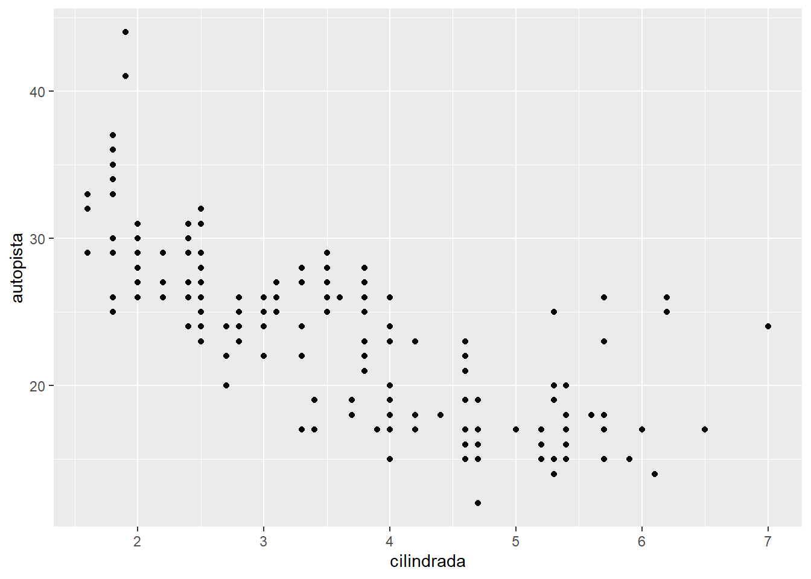
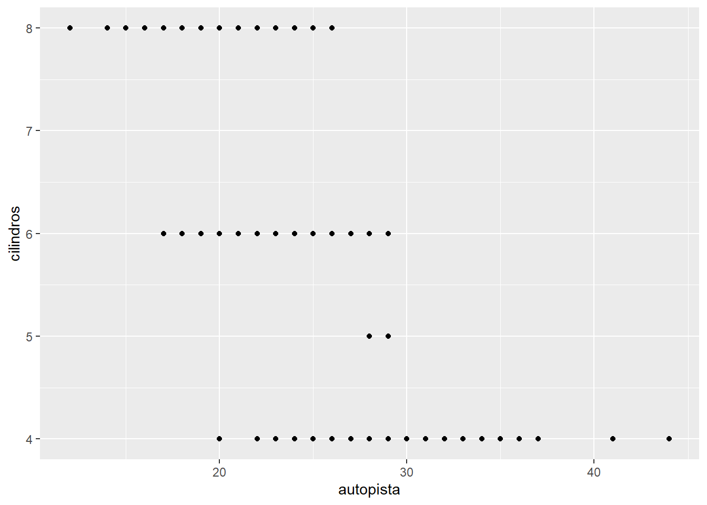
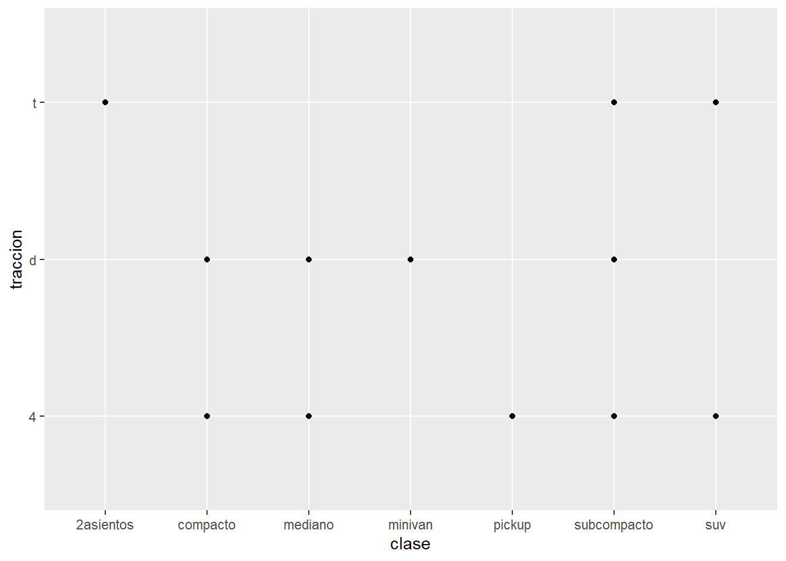
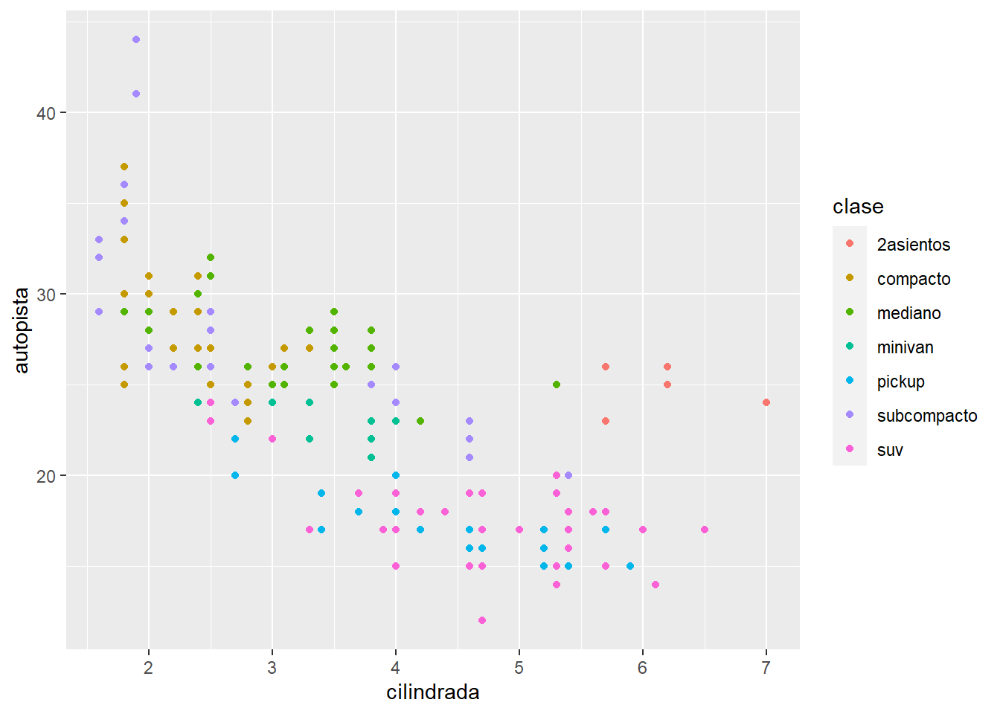
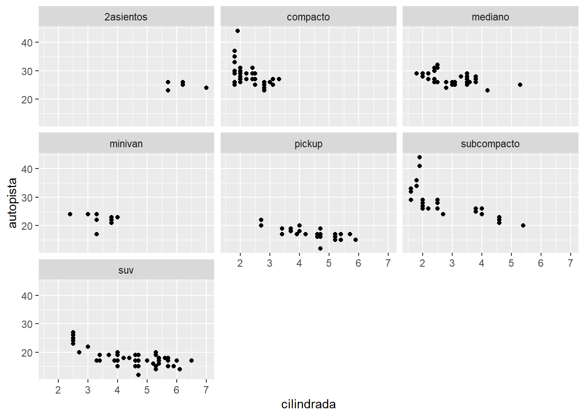
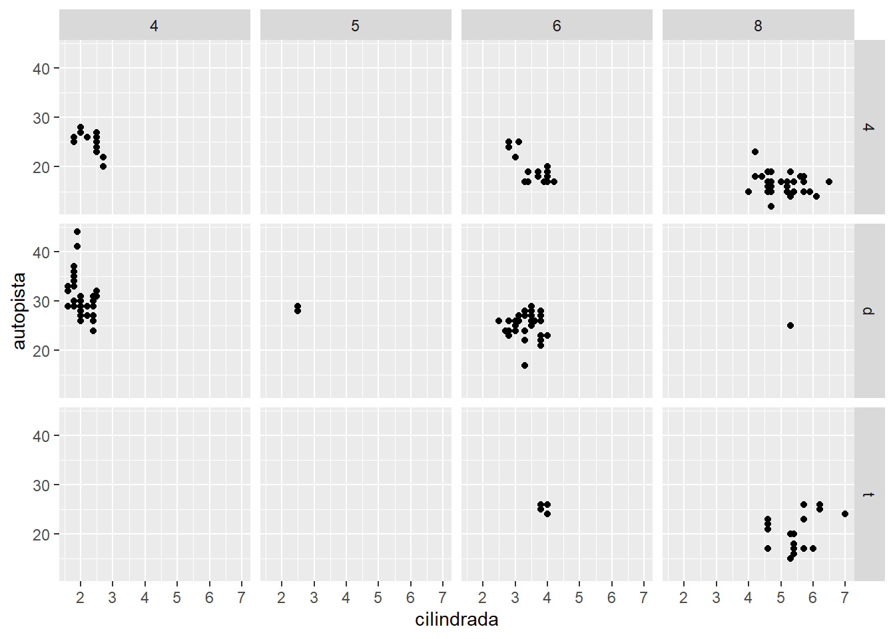
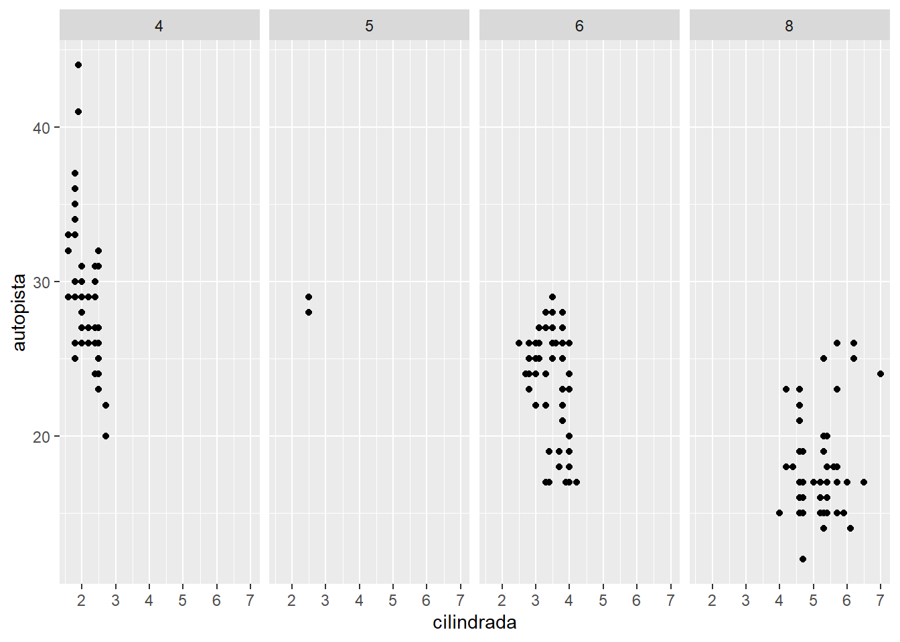
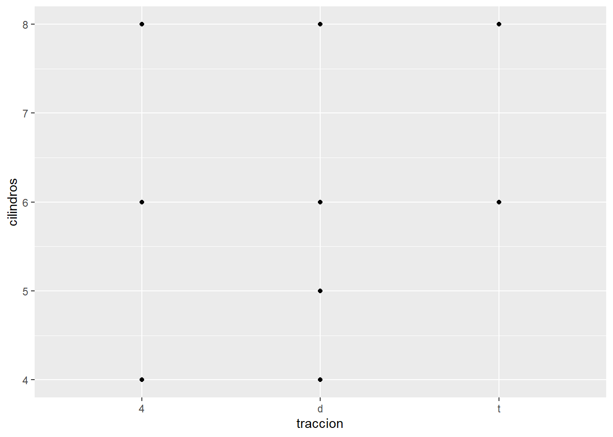
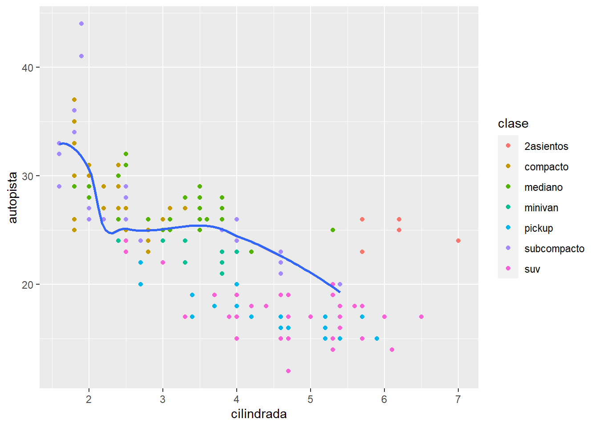

#install.packages("datos")Ciencia_datos_r
#install.packages("Lahman")Librerías
library(tidyverse)── Attaching packages ─────────────────────────────────────── tidyverse 1.3.2 ──
✔ ggplot2 3.4.0 ✔ purrr 1.0.1
✔ tibble 3.1.8 ✔ dplyr 1.0.10
✔ tidyr 1.3.0 ✔ stringr 1.5.0
✔ readr 2.1.3 ✔ forcats 0.5.2
── Conflicts ────────────────────────────────────────── tidyverse_conflicts() ──
✖ dplyr::filter() masks stats::filter()
✖ dplyr::lag() masks stats::lag()library(datos)Datos
millas %>%
head()# A tibble: 6 × 11
fabricante modelo cilin…¹ anio cilin…² trans…³ tracc…⁴ ciudad autop…⁵ combu…⁶
<chr> <chr> <dbl> <int> <int> <chr> <chr> <int> <int> <chr>
1 audi a4 1.8 1999 4 auto(l… d 18 29 p
2 audi a4 1.8 1999 4 manual… d 21 29 p
3 audi a4 2 2008 4 manual… d 20 31 p
4 audi a4 2 2008 4 auto(a… d 21 30 p
5 audi a4 2.8 1999 6 auto(l… d 16 26 p
6 audi a4 2.8 1999 6 manual… d 18 26 p
# … with 1 more variable: clase <chr>, and abbreviated variable names
# ¹cilindrada, ²cilindros, ³transmision, ⁴traccion, ⁵autopista, ⁶combustibleVisualización
millas %>%
ggplot() +
geom_point(mapping = aes(x=cilindrada, y= autopista))
Relación negativa entre la eficiencia en autopista y el tamaño del motor: Entre más grande el motor menos eficiencia
ggplot(data = millas) +
geom_point(mapping = aes(x=autopista, y= cilindros))
millas %>%
ggplot() +
geom_point(mapping = aes(x=clase, y= traccion))
Gráficas con “niveles” o valores estéticos
proceso de escalamiento
Ojo: mapear una variable no ordenada (clase) a una estética ordenada (size) no es una buena idea
Existen otras categorías para mapear, size: puntos de diferentes tamaños, alpha: puntos con transparencia, shape: hasta 6 formas en los puntos. Esta variable es categórica
millas %>%
ggplot() +
geom_point(mapping = aes(x=cilindrada, y= autopista, color = clase))
?millas ?geom_point
Separar por facetas
variables categóricas
facet_wrap
millas %>%
ggplot() +
geom_point(mapping = aes(x=cilindrada, y= autopista)) +
facet_wrap(~clase, nrow = 3)
facet_grid
Una variable categórica y otra numérica
millas %>%
ggplot() +
geom_point(mapping = aes(x=cilindrada, y= autopista)) +
facet_grid(traccion ~ cilindros)
millas %>%
ggplot() +
geom_point(mapping = aes(x=cilindrada, y= autopista)) +
facet_grid(. ~ cilindros )
Ejercicio
Conclusión: Existen autos con tracción delantera; de 4 cilindros; de motor pequeño con más eficiencia en autopista.
millas %>%
ggplot() +
geom_point(mapping = aes(x = traccion, y = cilindros))
En este caso la variable tracción es categórica en una función de mapeo que normalmente usa dos variables numéricas. El resultado se referirá a existencias no a densidad
Varias capas
millas # A tibble: 234 × 11
fabrica…¹ modelo cilin…² anio cilin…³ trans…⁴ tracc…⁵ ciudad autop…⁶ combu…⁷
<chr> <chr> <dbl> <int> <int> <chr> <chr> <int> <int> <chr>
1 audi a4 1.8 1999 4 auto(l… d 18 29 p
2 audi a4 1.8 1999 4 manual… d 21 29 p
3 audi a4 2 2008 4 manual… d 20 31 p
4 audi a4 2 2008 4 auto(a… d 21 30 p
5 audi a4 2.8 1999 6 auto(l… d 16 26 p
6 audi a4 2.8 1999 6 manual… d 18 26 p
7 audi a4 3.1 2008 6 auto(a… d 18 27 p
8 audi a4 qu… 1.8 1999 4 manual… 4 18 26 p
9 audi a4 qu… 1.8 1999 4 auto(l… 4 16 25 p
10 audi a4 qu… 2 2008 4 manual… 4 20 28 p
# … with 224 more rows, 1 more variable: clase <chr>, and abbreviated variable
# names ¹fabricante, ²cilindrada, ³cilindros, ⁴transmision, ⁵traccion,
# ⁶autopista, ⁷combustibleggplot(data = millas, mapping = aes(x = cilindrada, y = autopista)) +
geom_point(mapping = aes(color = clase)) +
geom_smooth(data = filter(millas, clase == "subcompacto"), se = FALSE)`geom_smooth()` using method = 'loess' and formula = 'y ~ x'